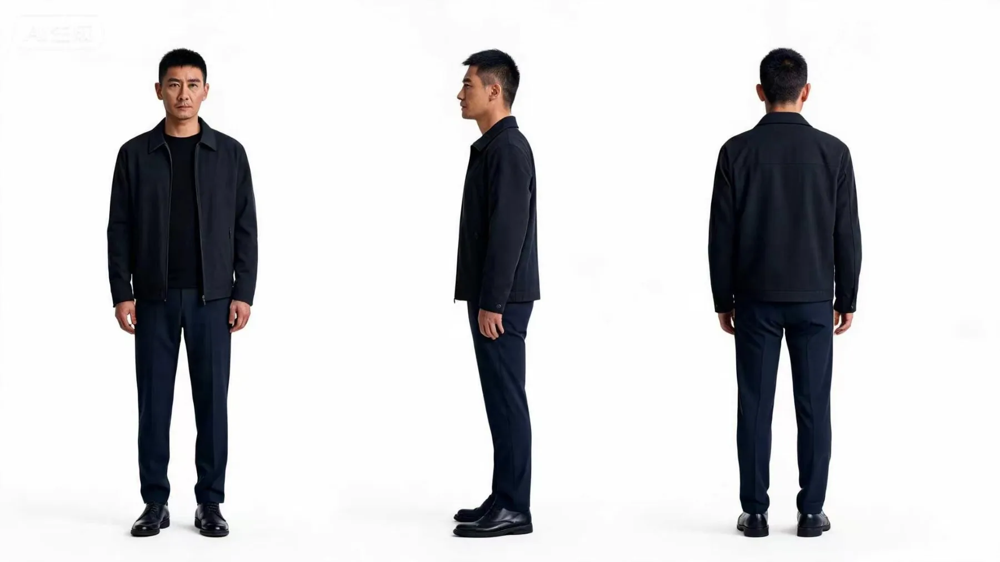
01
LEAD INVESTIGATOR
Captain Su
A restrained navy silhouette, mature facial structure and formal posture establish authority across office and landfill scenes.
ABOUT
I’m Shihui Su, a UNSW Media / Screen Production student developing an editor-led practice in AI-assisted filmmaking.
My work connects story planning, visual generation and post-production. I translate scripts into shot plans, build references, test AI outputs and select only the material that can support the final sequence. The project is completed through pacing, subtitles, music, sound and visual refinement rather than by generation alone.
FLAGSHIP CASE STUDY
A realistic crime-suspense opening that demonstrates an end-to-end AIGC short-drama workflow—from story interpretation and shot planning to generation, editing and final delivery.
LOGLINE
After a young woman is found dead in Sydney’s western suburbs, investigators connect witness testimony, forensic evidence and a crow-like mark to a hidden pattern behind a series of deaths.
The film is designed as an opening rather than a complete solution. It moves from discovery to investigation, gives the audience one concrete clue and stops when the wider pattern becomes visible.
“The truth has only just begun.”
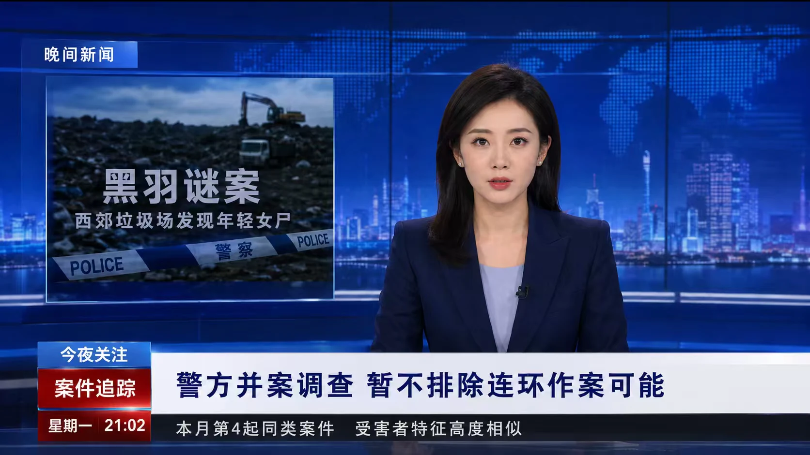
The news broadcast compresses case information into a familiar screen language, allowing the police-office sequence to begin with action rather than repeated exposition.
CHARACTER REFERENCE DEVELOPMENT
Front, side and back views define recognisable faces, silhouettes, clothing and identity details before the characters enter new locations, camera angles and actions.

A restrained navy silhouette, mature facial structure and formal posture establish authority across office and landfill scenes.
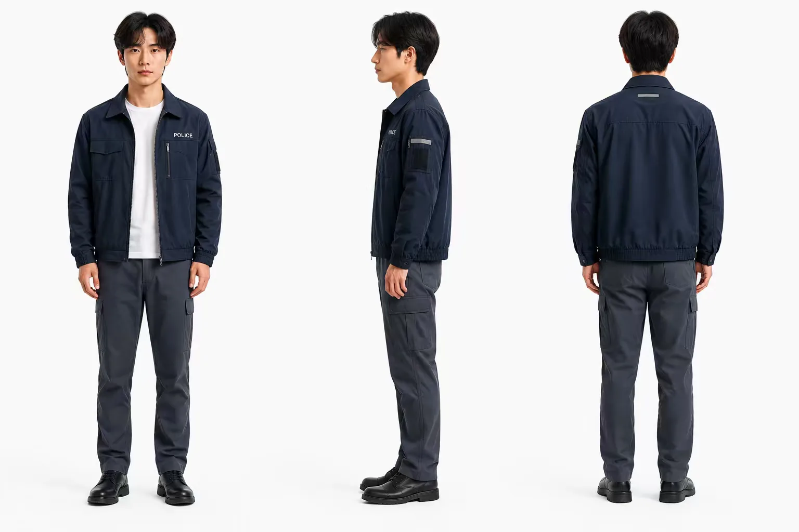
The police jacket, white undershirt and cargo trousers distinguish him from Captain Su while keeping both characters within the same unit.
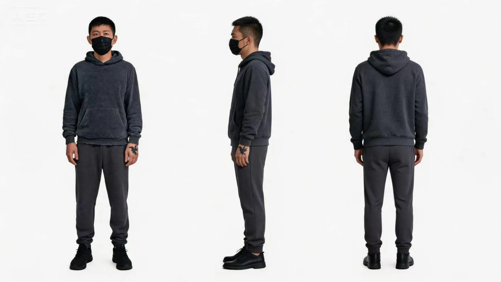
The charcoal hoodie, mask and crow mark on the hand carry the film’s central motif into the final reveal.
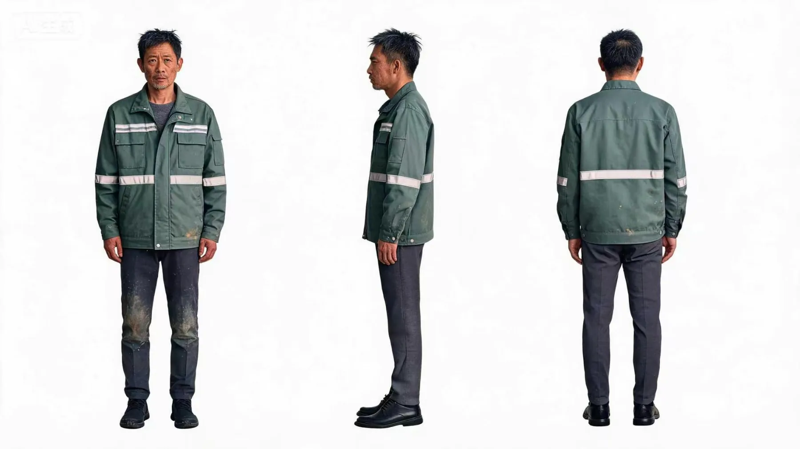
A worn reflective work jacket and dirt-marked clothing place the witness convincingly inside the landfill environment.
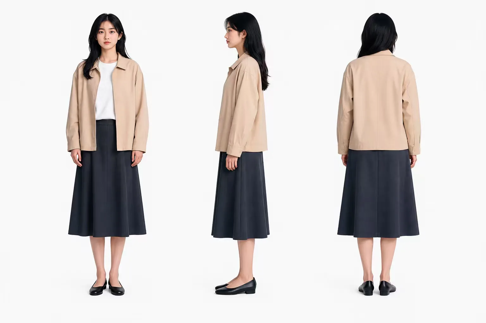
The pale jacket and dark skirt create a readable silhouette that remains visually distinct within the cold night environment.
VISUAL WORLD
Cold blue light, wet surfaces, police illumination and recurring crow imagery connect independently generated locations into one visual system.
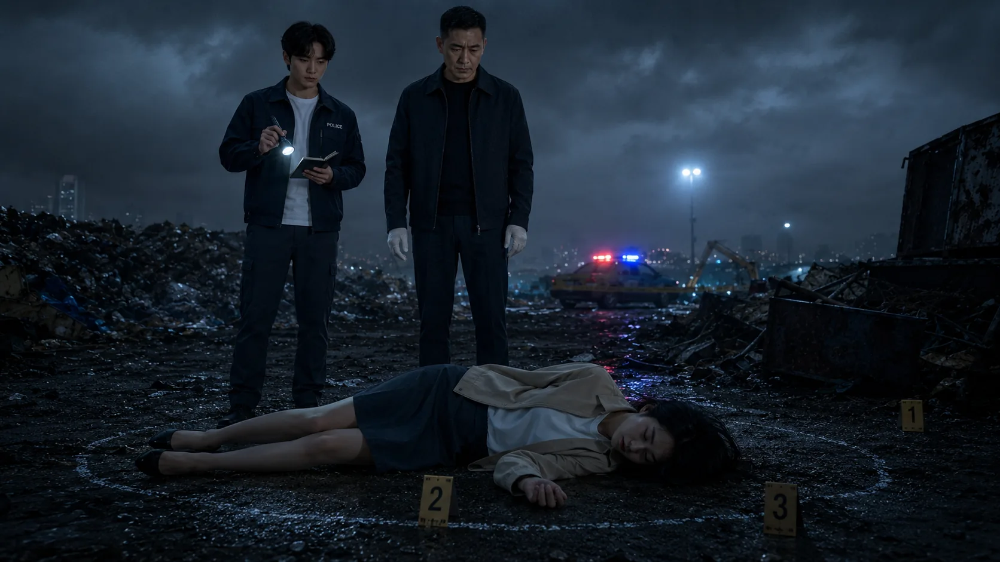
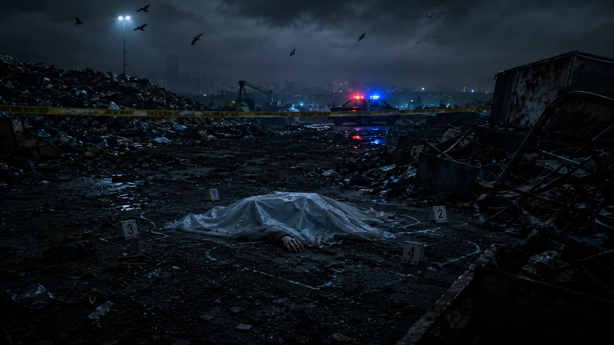
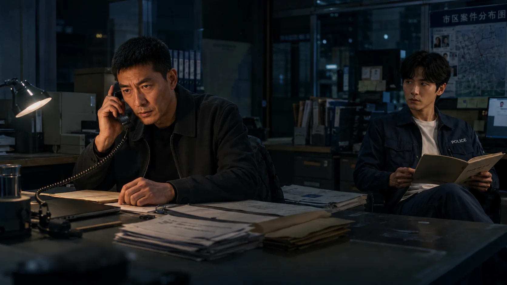
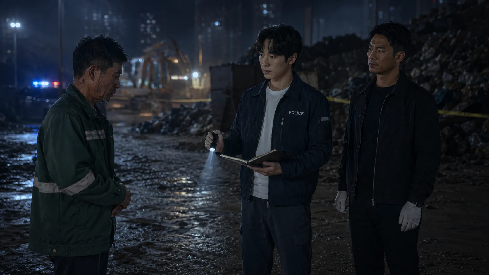
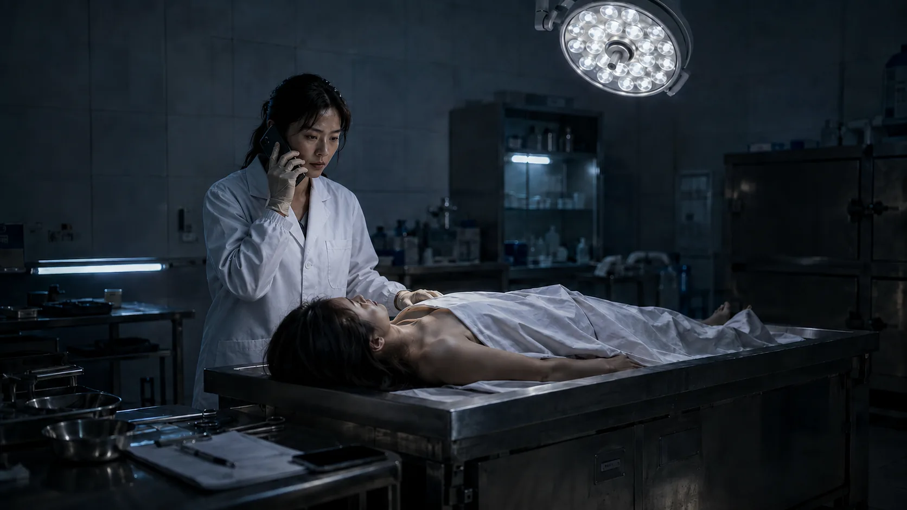
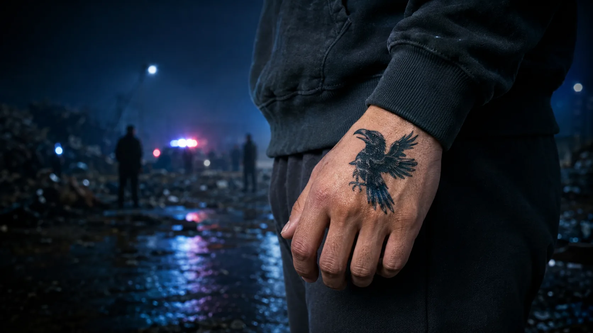
FROM SCRIPT TO SCREEN
Select a stage to see how each production decision became the starting point for the next.
I defined the film as a crime-suspense opening rather than a complete investigation. The crow, the trace and the final hand mark were established as recurring signals before any image was generated.
OUTPUT · LOGLINE, SCRIPT LOGIC, MOTIF SYSTEMPROBLEM SOLVING
Initial intention. The shot was planned to begin at the characters’ feet and move upward, revealing their bodies and the police tape behind them.
What failed. Repeated generations produced unstable legs, incorrect clothing, broken spatial direction and unusable camera motion. Some wording also triggered platform restrictions, making precise revision even harder.
Editorial decision. I stopped trying to force the same continuous move. The action was simplified into a walking shot, then divided across cuts so the audience still understood arrival and movement without seeing the failed camera move.
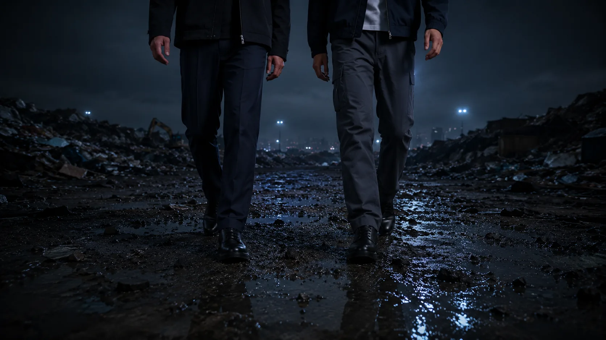
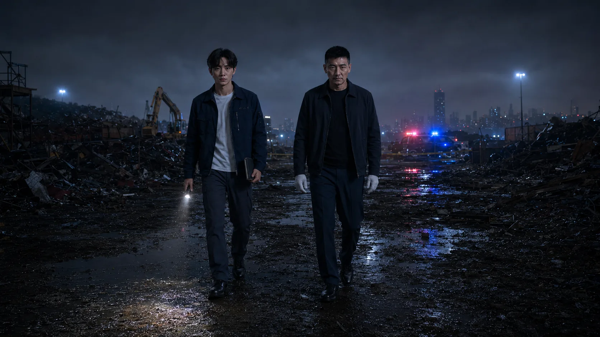
Initial intention. The suspect needed to remain part of the crowd while the crow symbol became the final readable clue.
What failed. Repeated versions changed the symbol into a feather, moved it onto the forearm or distorted the anatomy. Correcting the mark often damaged the hand or the surrounding composition.
Editorial decision. I separated the crowd reveal from the detail shot and selected a close-up where the crow sits clearly on the back of the hand. The edit creates the connection instead of forcing one image to solve every visual problem.
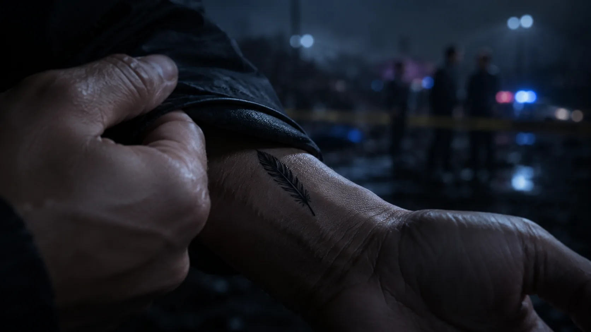
POST-PRODUCTION IN CAPCUT
Because the story order and visual direction had already been planned, the assembly was relatively smooth. The detailed work happened in the rhythm between shots, the sound layer, motion treatment and subtitle presentation.
I followed the investigation from discovery to news coverage, police response, witness testimony, forensic evidence and the suspect reveal. Each cut advances the case instead of simply displaying another generated image.
I trimmed clips to the moments where faces, bodies and camera movement remained convincing. Hard cuts maintain investigative momentum; fades and dissolves are reserved for transitions that need a slower shift.
I built the locations with environmental ambience, police sounds and movement effects before adding music. The tension grows through layering rather than making every transition loud.
English subtitles were translated, timed and revised for consistent placement. Dialogue uses left-aligned text in a controlled lower-screen area, while the title card, crow clue and black-screen ending retain their own composition.
FINAL FILM
01:30 · Crime-suspense opening
CONTACT / SHIHUI SU